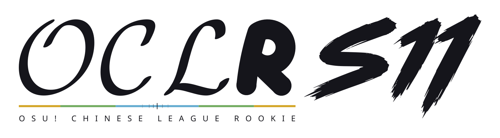
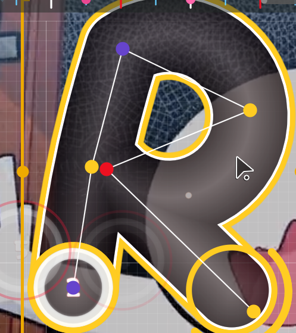
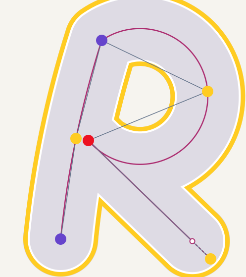

OCL · \mathcal{OCL} 保留加粗字形，内部透明
R · 轮廓、控制点与连线
S11 · 笔刷轮廓，内部透明


保留参考图中六个控制点的位置与顺序：左下起点 → 左侧中间点 → 上方 → 右侧 → 中部 → 右下。两段圆弧接一段直线，末段按截图中的实际滑条端点收短。整体排版只做等比缩放。截图之外的轮廓依照圆弧连续补全。
OCLR / SHAPE STUDY · REVISION 04

OCL · \mathcal{OCL} 保留加粗字形，内部透明
R · 轮廓、控制点与连线
S11 · 笔刷轮廓，内部透明


保留参考图中六个控制点的位置与顺序：左下起点 → 左侧中间点 → 上方 → 右侧 → 中部 → 右下。两段圆弧接一段直线，末段按截图中的实际滑条端点收短。整体排版只做等比缩放。截图之外的轮廓依照圆弧连续补全。